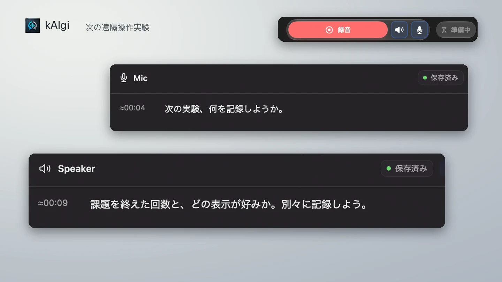

収録Recording
会議を録りながら
発言を文字で追う。Read along as you record.
kAIgiはマイクとMacの音をその場で文字に起こします。発言には時刻が付き、録音を開いて前後のやりとりを読み返せます。kAIgi records your microphone and Mac audio and transcribes both on your Mac. Each remark has a timestamp so you can revisit the conversation later.
録音する音源を選ぶChoose your audio sources
マイクMic
次の実験、何を記録しようか。What should we record in the next experiment?スピーカーSystem audio
課題を終えた回数と、どの表示が好みか。別々に記録しよう。How many tasks they finish, and which display they prefer. Let’s record those separately.
どの声を録るか選ぶ。Choose what to record.
会議中に論点を追う。Keep track of open questions.
設定で「議論を使う」をオンにすると、話題と未解決の問いが録音中にまとまります。議論の項目を選ぶと、もとになった発言を文字起こしで確かめられます。Turn on Discussion in Settings to see topics and open questions as the meeting unfolds. Select a discussion entry to find the remark behind it in the transcript.
初期設定ではオフです。オンにすると、資料を探すために短い検索語をDuckDuckGoとWikipediaへ送ることがあります。録音音声と文字起こし全文はMacに残ります。Discussion is off by default. When it’s on, kAIgi may send short queries to DuckDuckGo and Wikipedia to find supporting material. The recorded audio and full transcript stay on your Mac.
外部検索で送る情報What kAIgi sends in a web search録音を開いて質問する。Ask about this recording.
あとで決定事項を確かめるときは、録音を開いて「質問」に「次の実験では何を記録する？」と入力します。引用を開くと、発言の時刻と前後のやりとりを確認できます。Open the recording and use Questions to ask, “What did we decide to record in the next study?” Open a citation to check the timestamp and read what was said around it.
録音や文字起こしの最中は、質問に関係する発言の候補を表示します。処理が終わると、準備済みのGemmaか対応するAppleのモデルを使って、このMac上で回答を生成できます。While recording or transcription is in progress, Questions shows matching passages. Once both finish, a prepared Gemma model or a supported Apple on-device model can generate an answer on your Mac.